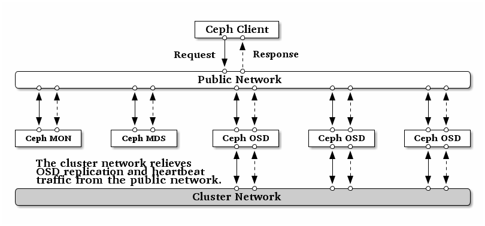
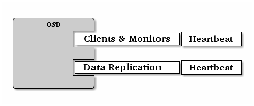

网络配置参考¶
网络配置对构建高性能 Ceph 存储集群来说相当重要。 Ceph 存储集群不会代表 Ceph 客户端执行请求路由或调度，相反， Ceph 客户端（如块设备、 CephFS 、 REST 网关）直接向 OSD 请求，然后OSD为客户端执行数据复制，也就是说复制和其它因素会额外增加集群网的负载。
我们的快速入门配置提供了一个简陋的 Ceph 配置文件，其中只设置了监视器 IP 地址和守护进程所在的主机名。如果没有配置集群网，那么 Ceph 假设你只有一个“公共网”。只用一个网可以运行 Ceph ，但是在大型集群里用单独的“集群”网可显著地提升性能。
我们建议用两个网络运营 Ceph 存储集群：一个公共网（前端）和一个集群网（后端）。为此，各节点得配备多个网卡，见硬件推荐——网络。

运营两个独立网络的考量主要有：
性能： OSD 为客户端处理数据复制，复制多份时 OSD 间的网络负载势必会影响到客户端和 Ceph 集群的通讯，包括延时增加、产生性能问题；恢复和重均衡也会显著增加公共网延时。关于 Ceph 如何复制参见伸缩性和高可用性；关于心跳流量参见监视器与 OSD 的交互。
安全： 大多数人都是良民，很少的一撮人喜欢折腾拒绝服务攻击（ DoS ）。当 OSD 间的流量失控时，归置组再也不能达到
active + clean状态，这样用户就不能读写数据了。挫败此类攻击的一种好方法是维护一个完全独立的集群网，使之不能直连互联网；另外，请考虑用消息签名防止欺骗攻击。
防火墙¶
守护进程默认会绑定到 6800:7300 间的端口，你可以更改此范围。更改防火墙配置前先检查下 iptables 配置。
sudo iptables -L
一些 Linux 发行版的规则拒绝除 SSH 之外的所有网卡的所有入栈连接，例如：
REJECT all -- anywhere anywhere reject-with icmp-host-prohibited
你得先删掉公共网和集群网对应的这些规则，然后再增加安全保护规则。
监视器防火墙¶
监视器默认监听 6789 端口，而且监视器总是运行在公共网。按下例增加规则时，要把 {iface} 替换为公共网接口（如
eth0 、 eth1 等等）、 {ip-address} 替换为公共网
IP 、 {netmask} 替换为公共网掩码。
sudo iptables -A INPUT -i {iface} -p tcp -s {ip-address}/{netmask} --dport 6789 -j ACCEPT
MDS 防火墙¶
Ceph 元数据服务器或 Ceph 管理器 会监听公共网 6800 以上的第一个可用端口。需要注意的是，这种行为是不确定的，所以如果你在同一主机上运行多个 OSD 或 MDS 、或者在很短的时间内重启了多个守护进程，它们会绑定更高的端口号；所以说你应该预先打开整个 6800-7300 端口区间。按下例增加规则时，要把 {iface} 替换为公共网接口（如 eth0 、 eth1
等等）、 {ip-address} 替换为公共网 IP 、 {netmask}
替换为公共网掩码。
例如：
sudo iptables -A INPUT -i {iface} -m multiport -p tcp -s {ip-address}/{netmask} --dports 6800:7300 -j ACCEPT
OSD 防火墙¶
OSD 守护进程默认绑定 从 6800 起的第一个可用端口，需要注意的是，这种行为是不确定的，所以如果你在同一主机上运行多个 OSD 或 MDS 、或者在很短的时间内重启了多个守护进程，它们会绑定更高的端口号。一主机上的各个 OSD 最多会用到 4 个端口：
一个用于和客户端、监视器通讯；
一个用于发送数据到其他 OSD ；
两个用于各个网卡上的心跳；

当某个守护进程失败并重启时没释放端口，重启后的进程就会监听新端口。你应该打开整个 6800-7300 端口区间，以应对这种可能性。
如果你分开了公共网和集群网，必须分别为之设置防火墙，因为客户端会通过公共网连接、而其他 OSD 会通过集群网连接。按下例增加规则时，要把 {iface} 替换为网口（如 eth0 、 eth1
等等）、 {ip-address} 替换为公共网或集群网 IP 、
{netmask} 替换为公共网或集群网掩码。例如：
sudo iptables -A INPUT -i {iface} -m multiport -p tcp -s {ip-address}/{netmask} --dports 6800:7300 -j ACCEPT
Tip
如果你的元数据服务器和 OSD 在同一节点上，可以合并公共网配置。
Ceph 网络¶
Ceph 的网络配置要放到 [global] 段下。前述的 5 分钟快速入门提供了一个简陋的 Ceph 配置文件，它假设服务器和客户端都位于同一网段， Ceph 可以很好地适应这种情形。然而 Ceph 允许配置更精细的公共网，包括多 IP 和多掩码；也能用单独的集群网处理 OSD 心跳、对象复制、和恢复流量。不要混淆你配置的 IP 地址和客户端用来访问存储服务的公共网地址。典型的内网常常是 192.168.0.0 或 10.0.0.0 。
Tip
如果你给公共网或集群网配置了多个 IP 地址及子网掩码，这些子网必须能互通。另外要确保在防火墙上为各 IP 和子网开放了必要的端口。
Note
Ceph 用 CIDR 法表示子网，如 10.0.0.0/24 。
配置完几个网络后，可以重启集群或挨个重启守护进程。 Ceph 守护进程动态地绑定端口，所以更改网络配置后无需重启整个集群。
公共网¶
要配置一个公共网，把下列选项加到配置文件的 [global] 段下。
[global]
# ... elided configuration
public network = {public-network/netmask}
集群网¶
如果你声明了集群网， OSD 将把心跳、对象复制和恢复流量路由到集群网，与单个网络相比这会提升性能。要配置集群网，把下列选项加进配置文件的 [global] 段。
[global]
# ... elided configuration
cluster network = {cluster-network/netmask}
为安全起见，从公共网或互联网到集群网应该是不可达的。
Ceph 守护进程¶
有一个网络配置是所有守护进程都要配的：各个守护进程都必须指定 host ， Ceph 也要求指定监视器 IP 地址及端口。
Important
一些部署工具（如 ceph-deploy 、 Chef ）会给你创建配置文件，如果它能胜任那就别设置这些值。
Tip
host 选项是主机的短名，不是全资域名 FQDN ，也不是 IP 地址。在命令行下输入 hostname -s 获取主机名。
[mon.a]
host = {hostname}
mon addr = {ip-address}:6789
[osd.0]
host = {hostname}
并非一定要给守护进程设置 IP 地址。如果你有一个静态配置，且分离了公共网和集群网， Ceph 允许你在配置文件里指定主机的 IP 地址。要给守护进程设置静态 IP ，可把下列选项加到 ceph.conf 。
[osd.0]
public addr = {host-public-ip-address}
cluster addr = {host-cluster-ip-address}
单网卡OSD、双网络集群
一般来说，我们不建议用单网卡 OSD 主机部署两个网络。然而这事可以实现，把 public addr 选项配在 [osd.n] 段下即可强制 OSD 主机运行在公共网，其中 n 是其 OSD 号。另外，公共网和集群网必须互通，考虑到安全因素我们不建议这样做。
网络配置选项¶
网络配置选项不是必需的， Ceph 假设所有主机都运行于公共网，除非你特意配置了一个集群网。
公共网¶
公共网配置用于明确地为公共网定义 IP 地址和子网。你可以分配静态 IP 或用 public addr 覆盖 public network 选项。
public network
- 描述
公共网（前端）的 IP 地址和掩码（如
192.168.0.0/24），置于[global]下。多个子网用逗号分隔。- 类型
{ip-address}/{netmask} [, {ip-address}/{netmask}]- 是否必需
No
- 默认值
N/A
public addr
- 描述
用于公共网（前端）的 IP 地址。适用于各守护进程。
- 类型
IP 地址
- 是否必需
No
- 默认值
N/A
集群网¶
集群网配置用来声明一个集群网，并明确地定义其 IP 地址和子网。你可以配置静态 IP 或为某 OSD 守护进程配置 cluster addr 以覆盖 cluster network 选项。
cluster network
- 描述
集群网（后端）的 IP 地址及掩码（如
10.0.0.0/24），置于[global]下。多个子网用逗号分隔。- 类型
{ip-address}/{netmask} [, {ip-address}/{netmask}]- 是否必需
No
- 默认值
N/A
cluster addr
- 描述
集群网（后端） IP 地址。置于各守护进程下。
- 类型
Address
- 是否必需
No
- 默认值
N/A
绑定¶
绑定选项用于设置 OSD 和 MDS 默认使用的端口范围，默认范围是
6800:7300 。确保防火墙开放了对应端口范围。
你也可以让 Ceph 守护进程绑定到 IPv6 地址而非 IPv4 地址。
ms bind port min
- 描述
OSD 或 MDS 可绑定的最小端口号。
- 类型
32-bit Integer
- 默认值
6800- 是否必需
No
ms bind port max
- 描述
OSD 或 MDS 可绑定的最大端口号。
- 类型
32-bit Integer
- 默认值
7300- 是否必需
No.
ms bind ipv6
- 描述
允许 Ceph 守护进程绑定 IPv6 地址。当前，信使对于 IPv4 或者 IPv6 地址只能二选一，不能同时使用。
- 类型
Boolean
- 默认值
false- 是否必需
No
public bind addr
- 描述
在某些动态部署中，
ceph-mon守护进程可能会监听public addr（已广播到了网内的其它节点）以外的本地 IP 地址，所以必须确保路由规则正确无误。如果配置了public bind addr，ceph-mon守护进程就只会监听它，并且在监视器运行图（ monmap ）里使用public addr地址、并向其余节点广播其地址。此行为仅限于监视器守护进程。- 类型
IP 地址
- 是否必需
No
- 默认值
N/A
主机¶
Ceph 配置文件里至少要写一个监视器、且每个监视器下都要配置
mon addr 选项；每个监视器、元数据服务器和 OSD 下都要配
host 选项。
mon addr
- 描述
{hostname}:{port}条目列表，用以让客户端连接 Ceph 监视器。如果未设置， Ceph 查找[mon.*]段。- 类型
String
- 是否必需
No
- 默认值
N/A
host
- 描述
主机名。此选项用于特定守护进程，如
[osd.0]。- 类型
String
- 是否必需
Yes, for daemon instances.
- 默认值
localhost
Tip
不要用 localhost 。在命令行下执行 hostname -s
获取主机名（到第一个点，不是全资域名），并用于配置文件。
Important
用第三方部署工具时不要指定 host 选项，它会自行获取。
TCP¶
Ceph 默认禁用 TCP 缓冲。
ms tcp nodelay
- 描述
Ceph 用
ms tcp nodelay使系统尽快（不缓冲）发送每个请求。禁用 Nagle 算法可增加吞吐量，但会引进延时。如果你遇到大量小包，可以禁用ms tcp nodelay试试。- 类型
Boolean
- 是否必需
No
- 默认值
true
ms tcp rcvbuf
- 描述
网络套接字接收缓冲尺寸，默认禁用。
- 类型
32-bit Integer
- 是否必需
No
- 默认值
0
ms tcp read timeout
- 描述
如果一客户端或守护进程发送请求到另一个 Ceph 守护进程，且没有断开不再使用的连接，在
ms tcp read timeout指定的秒数之后它将被标记为空闲。- 类型
Unsigned 64-bit Integer
- 是否必需
No
- 默认值
90015 minutes.